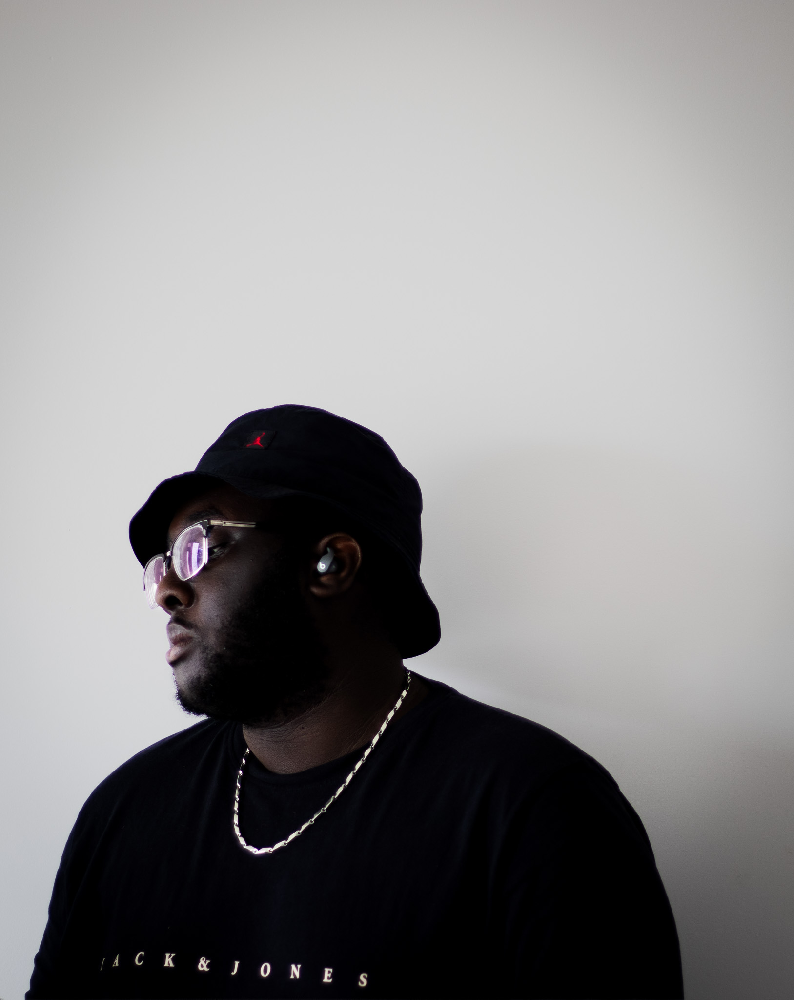

About Me
My name is Jonathan Pierre I was born The 24th of September 2004. I am currently a college student at Algonquin college I used to go to a French catholic high school called Pierre Savard. Pierre Savard Its located in my hometown Barrhaven and I am ready to learn in my new environment even though it may be difficult, I still try to motivate myself the best I can, and when I'm feeling down without motivation, I tell myself this quote
Wise Jonathan once said one who has time to cry and feel bad About life has time to do something about his situation - WISE JOE
A person who really inspired me with that quote is iman gadzhi he is a enturpenur who started creating his own company at a young age, and is currently a multimillionaire with 83 million dollars of net worth and now is helping others by giving them little tips and tricks to help them achieve their own goals like detoxification of social media, starting a new business from scratch, networking and etc
I have many small hobbies, that aren't particularly special, but I still do enjoy them quite a bit like reading novels and manga, playing video games with friends. I also quite enjoy going out to take pictures with friends or by myself and I feel more attracted to taking street photography and portrait photography.